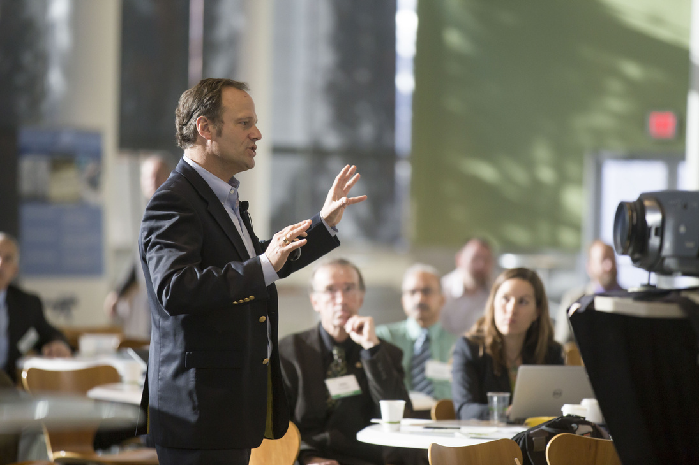

Programme d'activités
Promouvoir et réhausser l'éducation
Série
01

discutons de l'avenir
Forums et conférences animés par le doyen Charles Hamon
02

Table ronde pour l'innovation
Partage d'idées et de prévisions par le biais de discussions en salle numérique
03
Attribution des prix du sommet
Récompense et reconnaissance de l'excellence en éducation